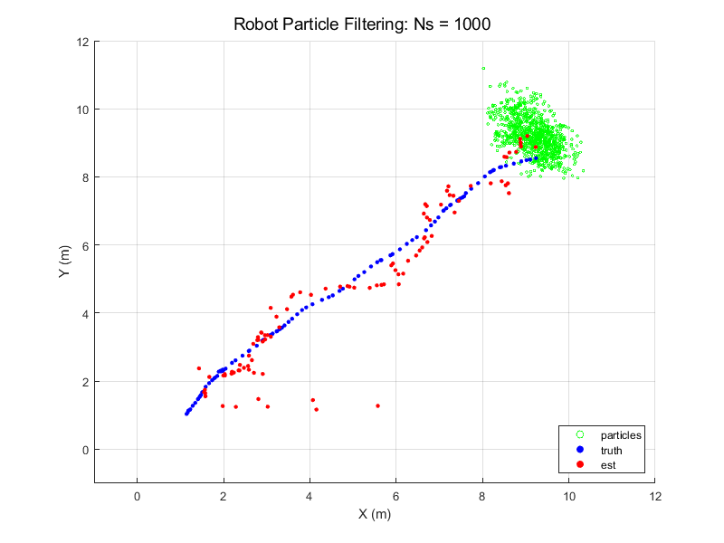
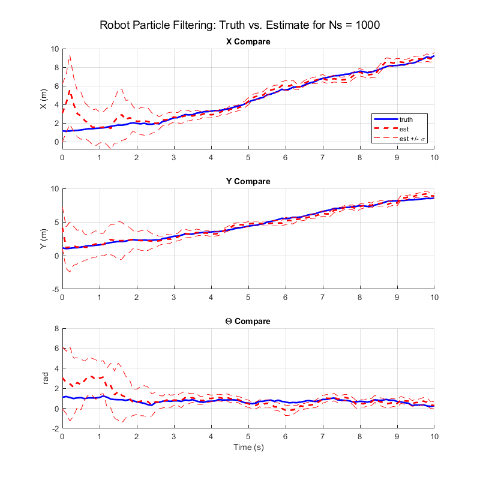
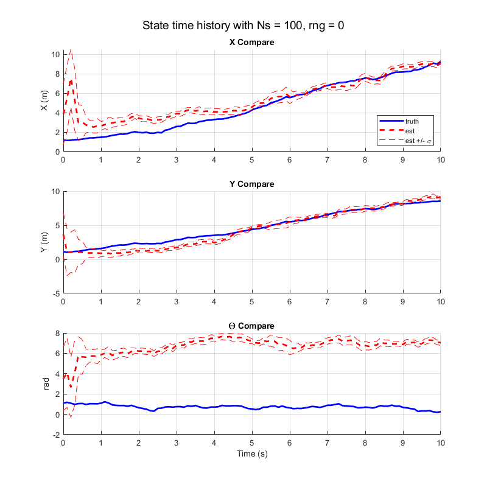
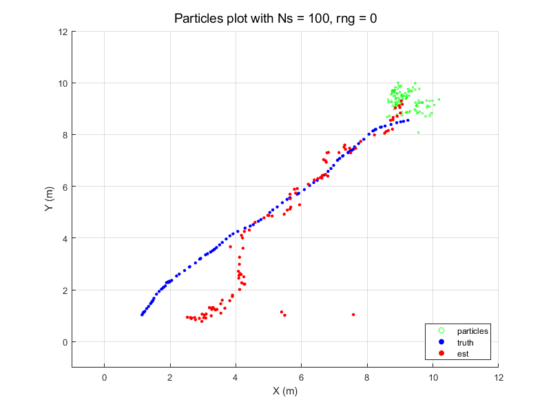
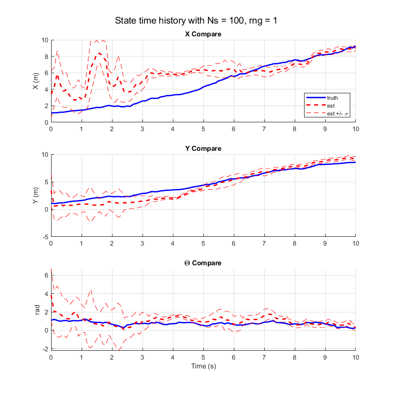
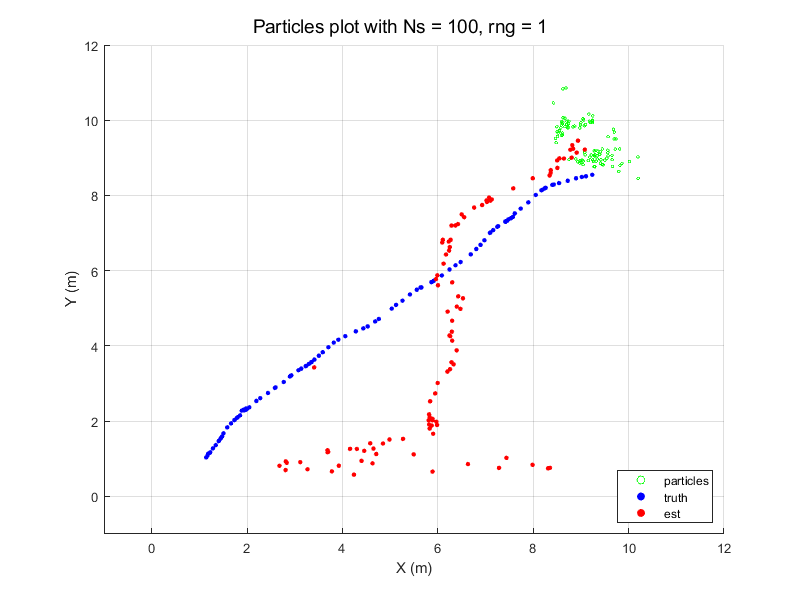
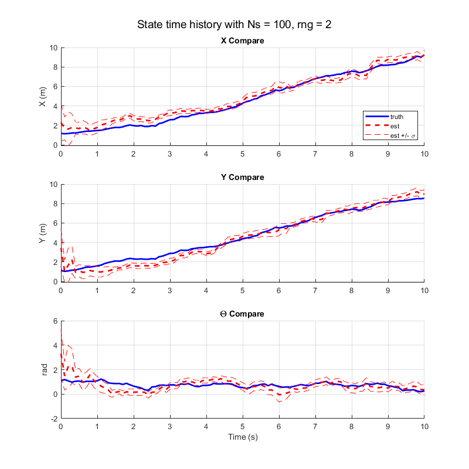
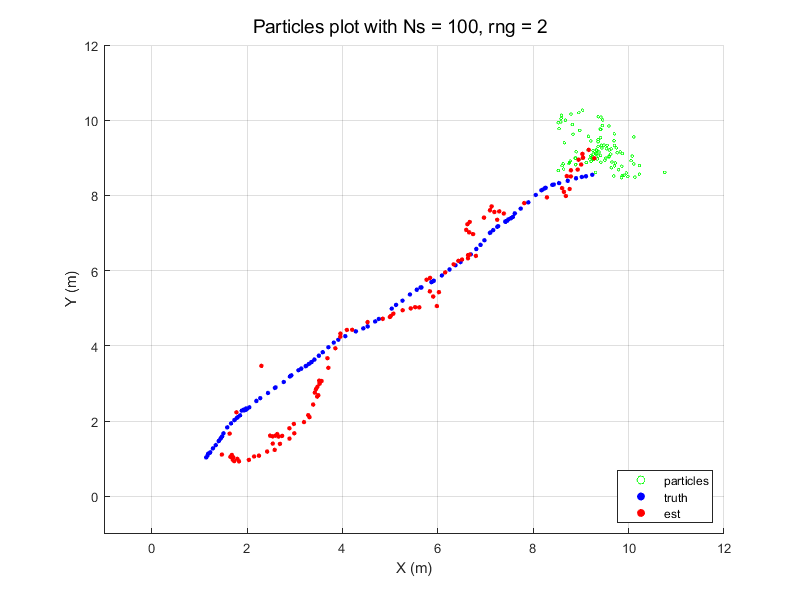

Contents
SPF 4: PARTICLE FILTER
clear % clc load problem4data.mat load problem4truth.mat rng(1) % noise Q = diag( [ 0.1, 5*pi/180 ] )^2; % robot wheel encoders R = diag( [ 1 1 1 ] )^2; % robot sonar % grab truth states x_truth = []; t = []; for i = 1:length(robot) x_truth = [ x_truth; robot(i).x' ]; t = [ t; robot(i).t ]; end % state size nx = 3;
PARTICLE FILTER
% # particles Ns = 1000; % particle filter [ x_hat, P, XX_k ] = pf_wrap(Ns, minx, maxx, Q, R, beacons, encoder, sonar, nx); plot_particles(Ns, minx, maxx, miny, maxy, XX_k, x_truth, x_hat);
PART B
b. Compare your state estimate to the true state, stored in problem4truth.mat.
plot_state(t, P, x_truth, x_hat, Ns);
Question i
% In particular, consider the following points: % i. Does your state estimate time history change much if you run the filter more % than once? Why might that be good or bad? Hint: try running the filter a few % times with only 100 particles. % A: The state estimate time history usually does not change much, which % is good. Running the filter with 100 particles makes the estimate % time history change more, using fewer particles make the estimate time % history change less. This good because this ensures that the particle % filter does not converge on an incorrect initial guess. % A: A consequence of the particle filter is that fewer particles leads % to degeneracy of the filter. Fewer particles will result in particles % in wrong locations having higher probabilities, which will lead to % clusters of particles persisting in incorrect locations. disp('Question i:') disp('Does your state estimate time history change much if you run the filter more than once?') disp('Why might that be good or bad? Hint: try running the filter a few times with only 100 particles.') fprintf('\n') disp('Answer:') disp('The state estimate history changes slightly but not much with 1000 particles.') disp('This is good because this means that the particle filter would not converge (for long) on an incorrect initial guess.') disp('However, when there are too few particles the state estimate time history changes more drastically.') disp('See the following plots using N = 100 particles in the filter. ') disp('For the rng(0) results, the theta state estimate is completely off. ') disp('For the rng(1) results, the particle filter takes a while to converge on the neighborhood of the truth state.') disp('For the rng(2) results, the results look closer to the 1000 particles result,') disp('but this demonstration shows that using fewer particles leads to degernacy in the filter.') disp('Fewer particles result in particles in wrong locations having higher probabilities, ') disp('which will lead to particles persisting in incorrect locations.') % # particles Ns = 100; rng_seed = 0; rng(rng_seed); % particle filter [ x_hat, P, XX_k ] = pf_wrap(Ns, minx, maxx, Q, R, beacons, encoder, sonar, nx); plot_state(t, P, x_truth, x_hat, Ns) sgtitle(sprintf('State time history with Ns = %d, rng = %d', Ns, rng_seed)); plot_particles(Ns, minx, maxx, miny, maxy, XX_k, x_truth, x_hat); sgtitle(sprintf('Particles plot with Ns = %d, rng = %d', Ns, rng_seed)); rng_seed = 1; rng(rng_seed); % particle filter [ x_hat, P, XX_k ] = pf_wrap(Ns, minx, maxx, Q, R, beacons, encoder, sonar, nx); plot_state(t, P, x_truth, x_hat, Ns) sgtitle(sprintf('State time history with Ns = %d, rng = %d', Ns, rng_seed)); plot_particles(Ns, minx, maxx, miny, maxy, XX_k, x_truth, x_hat); sgtitle(sprintf('Particles plot with Ns = %d, rng = %d', Ns, rng_seed)); rng_seed = 2; rng(rng_seed); % particle filter [ x_hat, P, XX_k ] = pf_wrap(Ns, minx, maxx, Q, R, beacons, encoder, sonar, nx); plot_state(t, P, x_truth, x_hat, Ns) sgtitle(sprintf('State time history with Ns = %d, rng = %d', Ns, rng_seed)); plot_particles(Ns, minx, maxx, miny, maxy, XX_k, x_truth, x_hat); sgtitle(sprintf('Particles plot with Ns = %d, rng = %d', Ns, rng_seed));
Question i: Does your state estimate time history change much if you run the filter more than once? Why might that be good or bad? Hint: try running the filter a few times with only 100 particles. Answer: The state estimate history changes slightly but not much with 1000 particles. This is good because this means that the particle filter would not converge (for long) on an incorrect initial guess. However, when there are too few particles the state estimate time history changes more drastically. See the following plots using N = 100 particles in the filter. For the rng(0) results, the theta state estimate is completely off. For the rng(1) results, the particle filter takes a while to converge on the neighborhood of the truth state. For the rng(2) results, the results look closer to the 1000 particles result, but this demonstration shows that using fewer particles leads to degernacy in the filter. Fewer particles result in particles in wrong locations having higher probabilities, which will lead to particles persisting in incorrect locations.     
Question ii
% ii. Why do clusters of particles sometimes persist in incorrect locations on the % map? % A: The clusters of particles sometimes persist because when the weights % get updated, drawing from the probability distribution function does % not always immediately cancel the incorrect particles. % A: log-likelihood local minima pockets . The particles are stuck in % local extrema. The more nonlinearities in the dynamics, the more local % minima and maxima that exist in the probability distribution function. disp('Question ii: ') disp('Why do clusters of particles sometimes persist in incorrect locations on the map?') fprintf('\n') disp('Answer:') disp('Log-likelihood local minima pockets; the particles are stuck in local extrema.') disp('The more nonlinearities in the dynamics, the more local extrema that exist in the probability distribution.') fprintf('\n') % iii. Why would it be difficult to implement this filter as an extended Kalman % Filter? % A: The nonlinearities would lead the EKF to become degenerate. % A: Nonlinearities would lead to degeneracy in the EKF. % The UKF does not require computing Jacobians, can be used with % discontinuous transformation, and is, most importantly, more accurate % than EKF for highly nonlinear transformations. The probability % distribution function is not Gaussian, which makes the EKF unsuitable as % the EKF relies on linearizing conditioning on Gaussian distributions. % Particle filter is better.
Question ii: Why do clusters of particles sometimes persist in incorrect locations on the map? Answer: Log-likelihood local minima pockets; the particles are stuck in local extrema. The more nonlinearities in the dynamics, the more local extrema that exist in the probability distribution.
Question iii
disp('Question iii:') disp('Why would it be difficult to implement this filter as an extended Kalman filter?') fprintf('\n') disp('Answer:') disp('The robot "initially has no idea where he is." ') disp('If the initial state estimate is wrong (or the dynamics or not modeled correctly), the EKF may diverge owing to its linearization.') disp('The EKF also relies on computing jacobians which are difficult while linearizing conditioned on Gaussian distributions. ') disp('It is more difficult to approximate a nonlinear function or transformation than it is to approximate a probability distribution.')
Question iii: Why would it be difficult to implement this filter as an extended Kalman filter? Answer: The robot "initially has no idea where he is." If the initial state estimate is wrong (or the dynamics or not modeled correctly), the EKF may diverge owing to its linearization. The EKF also relies on computing jacobians which are difficult while linearizing conditioned on Gaussian distributions. It is more difficult to approximate a nonlinear function or transformation than it is to approximate a probability distribution.
subfunctions
function [ x_hat, P, XX_k ] = pf_wrap(Ns, minx, maxx, Q, R, beacons, encoder, sonar, nx) % draw initial particles from initial uniform probability density, % initialize weights equally r0 = unifrnd(minx, maxx, [Ns, 2]); theta0 = rand(Ns, 1) * 2*pi; w_k0 = ones(Ns, 1) / Ns; % PARTICLE FILTER XX_k = [ r0, theta0 ]; w_k = w_k0; x_hat = []; P = []; % measurement index for k = 1 : length(encoder) % particle filter [x_khat, P_k, XX_k, w_k] = particle_filter(k, w_k, Q, R, Ns, XX_k, beacons, encoder, sonar, nx); % save outputs x_hat = [x_hat; x_khat]; P(:,:,k) = P_k; end end function plot_particles(Ns, minx, maxx, miny, maxy, XX_k, x_truth, x_hat) fname = sprintf('Robot Particle Filtering: Ns = %d', Ns); pos = [ 800 200 800 600 ]; hf_map = figure('name', fname, 'position', pos); sgtitle(fname) hold on; xlim([minx - 1, maxx + 2]) ylim([miny - 1, maxy + 2]) xlabel('X (m)'); ylabel('Y (m)') scatter(XX_k(:,1), XX_k(:,2), 4, 'g'); scatter(x_truth(1:end,1), x_truth(1:end,2), 12, 'b', 'filled'); scatter(x_hat(:,1), x_hat(:,2) , 12, 'r', 'filled'); legend('particles', 'truth', 'est', 'location', 'southeast') end function plot_state(t, P, x_truth, x_hat, Ns) % extract std devs x_sigma = sqrt(squeeze(P(1,1,:))); y_sigma = sqrt(squeeze(P(2,2,:))); theta_sigma = sqrt(squeeze(P(3,3,:))); fname = sprintf('Robot Particle Filtering: Truth vs. Estimate for Ns = %d', Ns); n = 3; p = 1; pos = [100 100 800 800]; figure('name', fname, 'position', pos) hold on; grid on; % x compare subplot(n,p,1) hold on; plot_lines(1, t, x_truth, x_hat, x_sigma) title('X Compare') legend('truth', 'est', 'est +/- \sigma', 'location', 'southeast') ylabel('X (m)') % x diff compare subplot(n,p,2) hold on; plot_lines(2, t, x_truth, x_hat, x_sigma) title('Y Compare') ylabel('Y (m)') % y compare subplot(n,p,3) hold on; plot_lines(3, t, x_truth, x_hat, x_sigma) title('\Theta Compare') xlabel('Time (s)') ylabel('rad') sgtitle(fname) end function plot_lines(i, t, x_truth, x_hat, x_sigma) plot(t, x_truth(:,i), 'b', 'linewidth', 2); plot(t, x_hat(:,i), 'r--', 'linewidth', 2); plot(t, x_hat(:,i) + x_sigma, 'r--'); plot(t, x_hat(:,i) - x_sigma, 'r--'); end function [x_khatp1, P_kp1, XX_kp1, w_kp1] = particle_filter(k, w_k, Q, R, Ns, XX_k, beacons, encoder, sonar, nx) % extract coder command uk = encoder(k).u; uk = uk'; vk = covdraw(Q, Ns); vk = vk'; % propagate state XX_kp1 = robot_dyn(uk, vk, Q, Ns, XX_k); % measurement model Z_mdl = Z_mdl_fn(XX_kp1, beacons, Ns); % Calculate innovation z_meas = sonar(k).z'; nu_k = Z_mdl - z_meas; % update weights w_kp1 = update_weights(Ns, nu_k, R, w_k); % evaluate effective # of particles w_sq_sum = sum(w_kp1.^2); Ns_hat = 1 / w_sq_sum; % resample if necessary if Ns_hat < Ns / 2 [XX_kp1, w_kp1] = resample(XX_kp1, w_kp1, Ns); end % Weighted state and covariance x_khatp1 = sum(w_kp1 .* XX_kp1); xtilde = (XX_kp1 - x_khatp1)'; P_kp1 = (w_kp1' .* xtilde) * xtilde'; end function w_kp1 = update_weights(Ns, nu_k, R, w_k) % Recalculate weights w_kp1 = zeros(Ns, 1); w_kp1_ln = zeros(Ns, 1); for i = 1:Ns % current innovation nu_ki = nu_k(i,:)'; % pdf p_ki = exp( -1/2 * nu_ki' * R^-1 * nu_ki ); % log of recalculated weight w_kp1_ln(i) = log(p_ki) + log(w_k(i)); end % Update according to log likelihood w_kp1 = exp( w_kp1_ln - max(w_kp1_ln) ); % Normalize weights w_kp1 = w_kp1 ./ sum(w_kp1); end function XX_kp1 = robot_dyn(uk, vk, Q, Ns, XX_k) % add noise to distance and angle cmds uk = uk + vk; % determine xa and xb change ds_k = uk(:,1); % distance delta dtheta_k = uk(:,2); % angle delta theta_k = XX_k(:,3); % OG angle dxa_k = ds_k .* cos(theta_k + dtheta_k); dxb_k = ds_k .* sin(theta_k + dtheta_k); % propagate dynamics x_k = XX_k(:,1:2); x_kp1 = x_k + [dxa_k, dxb_k]; theta_kp1 = theta_k + dtheta_k ; % propagated state XX_kp1 = [x_kp1, theta_kp1]; end function Z_mdl_min3 = Z_mdl_fn(XX_kp1, beacons, Ns) % for beacon index for i = 1:5 dxa = XX_kp1(:,1) - beacons(i,1); dxb = XX_kp1(:,2) - beacons(i,2); Z_mdl_all(:,i) = sqrt(dxa.^2 + dxb.^2); end % Create measurement model with min 3 ranges Z_mdl_min3 = zeros(Ns, 3); for i = 1:Ns min3 = sort(Z_mdl_all(i,:)); min3 = min3(1:3); Z_mdl_min3(i,:) = min3; end end function [XX_kp1, w_kp1] = resample(XX_kp1, w_kp1, Ns) % Cumulative distribution function XX_kp1_new = XX_kp1; w_kp1_cdf = cumsum(w_kp1); % for each particle for pi = 1:Ns % choose random number [0,1] n_rand = rand; % loop stops right before n_rand exceeds w_kp1_cdf threshold wi = 1; while n_rand > w_kp1_cdf(wi) && wi < Ns wi = wi + 1; end XX_kp1_new(pi,:) = XX_kp1(wi,:); end XX_kp1 = XX_kp1_new; w_kp1 = ones(Ns,1) / Ns; % Normalize weights w_kp1 = w_kp1 ./ sum(w_kp1); end